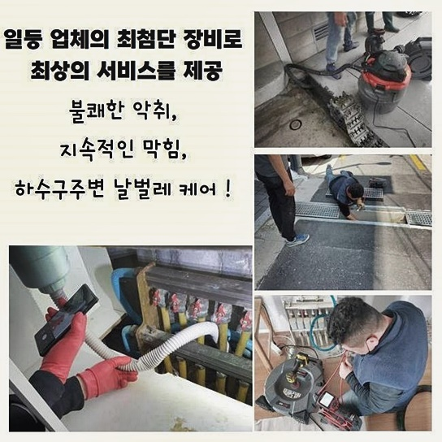
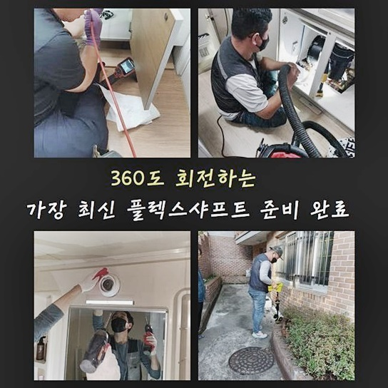
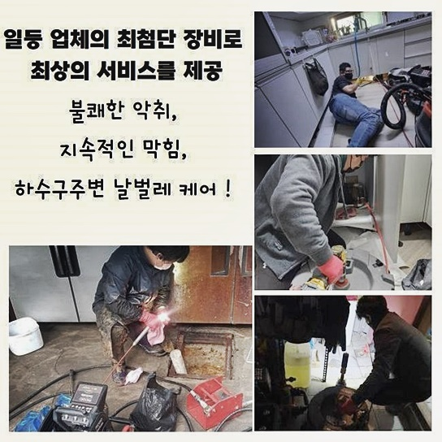
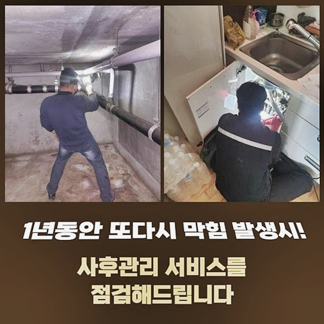
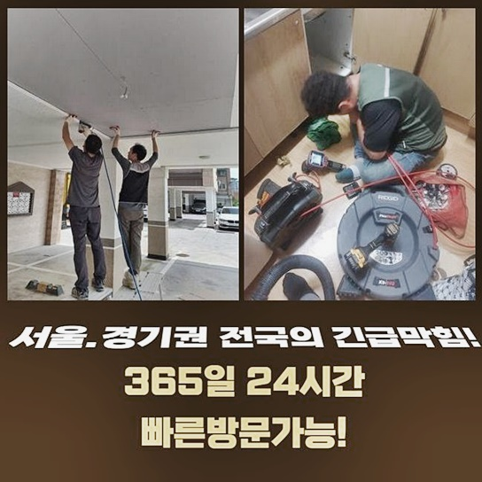
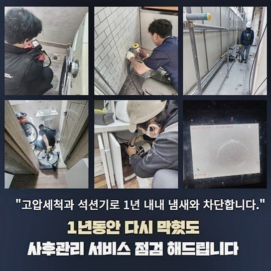

🏠 인천 송현동화장실하수구역류 창영동 하수구뚫는비용 해결방법
용인시 처인구 배관막힘 전문 시공 후기

📋 작업 개요
- 위치: 용인시 처인구, 수원시 영통구, 화성시 동탄
- 서비스 유형: 배관막힘, 하수구청소, 누수수리, 고압세척, 내시경점검
- 작업 일시:
- 업체명: 하수구수사대 (010-5615-2118)
🔍 문제 상황
인천 송현동화장실하수구역류 창영동 하수구뚫는비용 해결방법
오늘내방한 작업장소는 상가건물입니다
여러건물에서 막힘증세가 시작되었다는건 장시간 하수구안쪽에 이물질들이 쌓여있는확률이 높은상태인만큼 신속히 대응해야해요
혹여나 그대로 내버려둔다면 순식간으로 문제가커지며 물사용을하지 못하게되어 건물운영시 불편함이 발생되는 좋지못한결과를 초래하는만큼 주의하실 필요가있죠
건물관리인이 하수구점검을 진행해보다가 막힘현상이 발현했다는 내용을 접수했죠
자체적인 시스템으로 보유중인 장비들을써서 직접처리하려고 시도를해봤지만 뚫리지않았기에 조속히 저희쪽에 전화주신것이었죠
하수구가 막히게되었을때 전문장비없이 시도하는조치는 위험한행동이에요
막힘문제나 역류까지 일어나는 대표적인원인을 말씀드리자면 배관속에 쌓여있는 이물질들을 꼽을수있죠
셀프적인 방법을통해 배수관수리를 강행하실경우 일시적인효과성을 받아볼수있지만 하수구안쪽 깊은쪽에 오염물을 밀어넣는 결과가되면서 오히려상태를 심각하게 만들수가있답니다

🔎 원인 분석
💡 전문가 진단: 정밀 진단 장비를 사용하여 슬러지의 고착 여부를 판명하고 타격/세척 작업을 실시했습니다.
표면적인문제를 보인다면 상태를 살펴보신후 신속하게 전문인의 도움을받는게 바람직하답니다
상가건물의 특성상으로 신속히 해소하지않으면 동시다발로 여러세대에서 막힘이 발발될겁니다
문제가 불거지는것을 방지하려면 정확한원인을 살펴서 제거해줘야 합니다
다짜고짜 기계를투입시켜 작업하기보단 배관카메라처럼 전문도구를 활용하여 검수작업을 첫번째로 진행해야만해요
내시경장비는 두눈으로 살필수없는 배관속을 확인시켜주는 장비라고할수있죠
물길을파악해 점검과정을 거치면 막힘발생 지점뿐아니라 이물의형태까지 파악하기에 알맞은 작업과정으로 진행할수있어요!
현장경험이 풍부하신 기술자가 빠짐없이 배관곳곳마다 세세하게 검수를한결과 메인관을 시작해서 연결되어있는 하수구까지 여러이물이 쌓여있는것을 살필수있었어요
하수도속에는 석회물같이 물과함께 녹아지지않는 특징을가진 오염물이 다량으로 축적되어있는 상황을 확인했어요
단단하게굳어 쌓인상황이므로 잘못하다가는 2차적인 문제들로 불거질뻔한 상황임을 파악할수가있었죠
많은구간에 오염물이 쌓인상태일경우 샤프트기계와 흡입도구를 써서 구간마다 퇴적물질들을 제거해주어야합니다

🔧 작업 과정
샤프트기계를 활용할경우 굳은이물을 파쇄하는 효과를볼수있어요
파쇄완료된 오염물을 석션장비로 빨아들이는 작업들을 반복해서 진행해주면 막혀있던하수구가 점차 해소가되는 상황을 보실수있어요
어느정도로 뚫린뒤 메인으로 사용되고있는 바깥맨홀로 이동한뒤 하수도고압세척 설비를 투입합니다
고압세척과정은 강력한압력을 통하여 이물을 분쇄하므로 돌처럼굳은 석회물과 크기가큰 오염물까지 깔끔히 제거시킵니다
하수관막힘이 잦게 발현되는곳이라면 간헐적으로 하수구세척을 진행하실것을 권장드리고싶어요
상가건물에서는 연관된문제들이 잦게 일어나는만큼 일년에 한두번은 배관점검을 진행해주시는것이 예방할수있다는점 참고해주신다면 좋을거라 생각해요!
청소작업을 정확하게 만끽하기위하여 유의해봐야할 조항들이 존재해요
배관은우리들이 생각해보는것과 달리복잡히 얽혀있는상태고 내구도자체가 떨어져버린 상태일수있기에 무조건적인 강력한수압을 입히게될경우 하수구손상이 발생되어 누수처럼 2차적인일로 이어지게되는데요
작업을하다가 일어날수있는 상태를방지하고 안전한과정으로 진행되려면 하수구의 구조자체와 특징에대하여 정확하게 이해해야하고 배수관세척을 이룰땐 구간마다 서로다른 압력을 가하는게 좋답니다
주기적인 배관점검이 착수되지못했기에 예측했던것보다 많은시간들이 소요됐어요
다양하게 작업경험을 가지고있는 전문기사가 세세하게 세척을 반복하여 진행해봤더니 하수도속에 쌓인것들을 제거시킬수있었어요
마무리과정으로 하수도CCTV로 주요시설을 점검해보니 이전상태와는 달라진배관을 보여드릴수있었어요
고객님이 만족한다고 표현해주셨기에 저또한 흡족을 느낄수있었죠
막히는현상은 신속대처가 필수적인데 큰일이아니라는 생각을가지고 방치하는분이 많은모습이에요
피해규모가 커지게되면 복구해보기까지 비용적인부분과 시간까지 고려해야합니다
다시한번 강조하지만 하수구문제를 내버려두면 2차적인피해를 초래할수있어요 예시로 욕실이나 주방쪽에서 배수상황이 정상이아니면 일상생활이 불편해지죠


✅ 작업 완료
더심각해지면 역류하거나 악취문제까지 이어져서 불편함만 커지게될거에요
이것들을 조치하려면 전문가를통해 정확한문제를 살피어 조치해봐야합니다
의뢰자분의 시간적인부분과 수리비가 발생되는 부분이기때문에 주의를들여 사전에 예방대책을 취하는게 중요하겠습니다
배관이막혔을때 비용적인부분을 줄이시려면 막힘징조가 나타나자마자 대처하는게 해결의 지름길이라는것을 기억바랍니다



⚠️ 하수구 배관 막힘 예방 및 관리 가이드
- ✅ 머리카락, 비닐, 물티슈 등 물에 분해되지 않는 이물질은 절대 흘려보내지 마세요.
- ✅ 기름기 많은 식기는 설거지 전 키친타올로 먼저 기름때를 닦아내세요.
- ✅ 주기적으로 배수구에 뜨거운 물을 가득 부어주어 유지방 고착을 방지하세요.
- ✅ 작업 후 1년 이내 재발 시 무상 A/S 보증 서비스를 제공합니다.
💡 핵심 정리
- 확실한 장비 작업(내시경 점검 및 샤프트 스케일링)으로 원인을 뿌리 뽑습니다.
- 작업 후 1년 이내에 동일한 부위 재발 시 100% 무상 A/S 서비스를 보장합니다.
- 서울 · 경기 · 인천 전 지역에 24시간 언제든 긴급 출동할 수 있도록 항시 대기 중입니다.
❓ 자주 묻는 질문 (FAQ)
🚨 용인시 처인구 배관막힘 문제로 고민이신가요?
정확한 원인 진단과 확실한 시공으로 재발 없는 해결을 약속드립니다.
24시간 긴급 출동 | 서울 · 경기 · 인천 전지역 | 1년 내 재발 시 무상 A/S